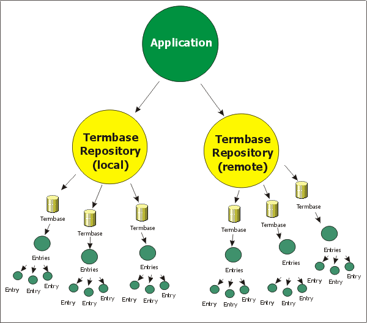

The MultiTerm Object Model
The top-level object in the object hierarchy of MultiTerm is the MultiTerm client application. When accessing MultiTerm client functionality programmatically, you first need to create a MultiTerm Client instance.
A client instance can connect to local and/or remote (i.e. server) termbases. Local termbases are physically stored in a Microsoft Jet Data Engine (*.mdb files). Remote termbases are stored in Microsoft SQL Server or Oracle 8/9 database backends.
Within a collection or (local and remote) termbases you can identify specific termbases. These termbases, in turn, contain a number of entries, which are also referred to as concepts. This pool of entries is comprised of single entries (concepts), which are uniquely identified by a so-called concept ID. An entry in turn is made up of fields: system fields (e.g. date/time), index fields (languages and the corresponding terms) and descriptive fields (e.g. a Note, Definition, ...).
